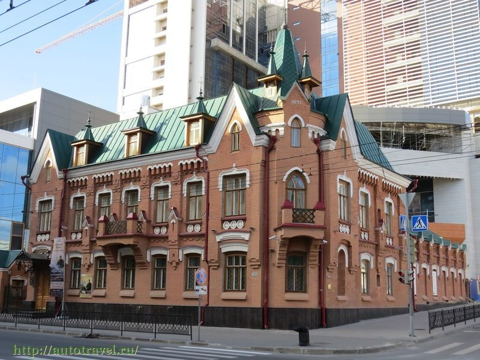

История
Датой основания Ростова-на-Дону считается 1749 год, когда российская
императрица Елизавета Петровна подписала Указ об учреждении в устье реки Темерник государственной таможни.
После этого здесь появляется порт, а в 1761 году - начинается строительство военной крепости Святого Димитрия
Ростовского. о 1917 года Ростов был третьим городом в России по величиневнешнеэкономического торгового товарооборота.
К концу 30-х годов по численности населения и уровню экономического развития он входил в десятку крупнейших городов
Советского Союза. В героическую летопись Великой Отечественной войны Ростов вошел как город, где Красная Армия
перешла от обороны в наступление. Ростов-на-Дону в планах фашистского командования был стратегической целью –
недаром Геббельс назвал его «Воротами Кавказа». Но, именно здесь, у «Ворот Кавказа» в ноябре 41-го
Вермахт потерпел первое крупное поражение. В период оккупации города фашисты расстреляли и замучили десятки тысяч
мирных жителей, около 50 тысяч человек угнали в рабство. В развалины были превращены центральные районы города,
взорваны и сожжены здания театров, институтов, школ и больниц. Из 270 фабрик и заводов уцелело только шесть.
Однако, благодаря самоотверженному труду ростовчан столица Дона была восстановлена из руин и стала еще более
красивой. Сегодня Ростов – это один из наиболее крупных мегаполисов современной России, политический, экономический
, культурный и научный центр юга страны, важный узел транспортных магистралей.
Выдающиеся личности города
Михаил Фабианович Гнесин
Советский композитор, общественный деятель, заслуженный деятель искусств РСФСР, Лауреат Сталинской премии второй степени Михаил Гнесин также является уроженцем Ростова.
Свое первое музыкальное произведение Гнесин написал в восемь лет. В 16 лет (1899 г.) поступил в Петербургскую консерваторию, которую удалось закончить с трудом из-за его временного исключения в связи с участием в студенческой забастовке.
Как утверждал сам композитор, большая часть его произведений была написана именно в Ростове. Это были фортепьянные пьесы, романсы на стихи русских поэтов и другие сочинения.
В 1923 году Гнесин был инициатором создания кафедры композиции в московском музыкальном техникуме, руководимом его сёстрами (Евгенией, Еленой и Марией). Сейчас это учебное заведение является подразделением Российской академии музыки Гнесиных, а также одним из самых престижных и уважаемых училищ страны. В нем готовят музыкантов по программам среднего профессионального образования.
Доктор искусствоведения Гнесин является автором "Начального курса практической композиции". По этой уникальной системе с 1927 года преподавали в Московской консерватории и до сих пор ее используют в Гнесинском училище.
В 2015 году в Ростове были установлены две мемориальных доски Гнесину с его портретным изображением, а в 2019 году именем знаменитого композитора назван один из переулков в Первомайском районе города.
Виктор Владимирович Понедельник
Советский футболист, заслуженный мастер спорта СССР родился в Ростове. Популярность спортсмену принес финал чемпионата Европы в 1960 году, на котором в ходе игры с Югославией он на 113-й минуте забил легендарный "золотой" гол.
Благодаря Понедельнику, сборная СССР по футболу выиграла Кубок Европы, сделав победителей самыми выдающимися футболистами в истории советского футбола.
Всего Понедельник за свою карьеру участвовал в 217 матчах чемпионатов СССР, забив 86 голов, непосредственно за сборную СССР он провел 29 матчей, отправив в ворота соперников ровно 20 мячей.
Кстати, на стадионе "Олимп-2" в Ростове установлен памятник, изображающий молодого Понедельника с кубком в руках.
Василий Михайлович Вакуленко
"Отец русского рэпа" - Баста, сейчас это имя не знает разве что ленивый. Василий сумел пробить дорогу своими композициями в сердца россиян, добиться широкой известности, признания и тех высот, о которых мечтают миллионы.
Баста родился в Ростове, он один из самых известных в России исполнителей хип-хопа, рэпа, а также битмейкер, композитор, телерадиоведущий, актёр, сценарист, режиссёр и продюсер. Василий мелькает с экранов телевизоров чаще, чем рекламные ролики. Это настоящий успех.
Вспомним его хиты: "Мама", "Осень", "Город дорог", "Сансара", "Моя игра", "Выпускной". Их слушали и слушают даже те, кто далек от рэпа
Александр Аронович Печерский
Ростовчанин, офицер Красной Армии Александр Печерский был руководителем единственного успешного восстания в лагере смерти Собибор в годы Великой Отечественной войны, которое случилось 14 октября 1943 года.
Благодаря этому геройскому поступку простого мужчины удалось спасти многие жизни. Сам лагерь после побега заключенных был уничтожен.
О Собибор написано немало книг, а в 1987 году в Голливуде сняли фильм "Побег из Собибора", в котором Константин Хабенский вжился в роль Печерского и блестяще ее сыграл. За роль солдата Сашко актер получил "Золотой глобус".
Традиции города
Праздники и фестивали
День города Ростова-на-Дону отмечают в первой половине сентября.
Центр гуляний – набережная реки Дон. Там проходит и традиционный Фестиваль «Ростов многонациональный»
с выставкой национальных культур, мастер-классы, и концерты. На аллеях и проезжей части ростовчан и гостей
развлекают коллективы с показательными выступлениями экстремальных видов спорта, выставка автомобилей и активные
зоны - научное шоу, шоу мыльных пузырей и т.д. Праздничные гуляния планируются во всех парках.
Так, в новом парке «Левобережный» последние несколько лет помимо спортивных мероприятий и автопробега
проходят гастрономический фестиваль, на котором рестораны города представят эксклюзивное меню из нескольких блюд,
созданных специально для праздника
Фестиваль реки Дон
Июнь в Ростовской области богат на зрелищные мероприятия.
Не удивительно, что именно летом чествуют и Дон-батюшку. Центром народных гуляний также
становится набережная Ростова. Здесь проводятся концерты, театрализованные представления, мастер-классы,
работают музейные павильоны. Дети познают историю реки в археологической песочнице, изучают игры предков
и делают сувениры своими руками. Особой популярностью у туристов пользуется бесплатная часовая экскурсия
на теплоходе «Путешествие по реке времени», участники которой знакомятся с историей Дона и Ростова-на-Дону.
Можно посетить большое количество фестивалей, связанных с искусством.
Театральный фестиваль «Русская комедия» проходит во второй половине сентября (1 раз в 2 года) на
сцене академического театра драмы им. М. Горького в г. Ростове. Любителей джаза в начале осени ждут
в областной филармонии на международном мероприятии «Ростовский джаз приглашает!»
Традиционные блюда Ростова-на-Дону
Основным традиционным продуктом для Ростова-на-Дону является рыба; из нее готовят
разнообразные блюда: супы, запеченные пироги, рыбу запечённую, жареную, засоленную.
Другие распространенные продукты на столе, конечно, это мясо, дичь, фрукты и овощи, соленья,
печеные блюда. Излюбленными напитком во все времена был квас и мед, который готовили с добавлением
хмеля, пряностей. Нельзя не упомянуть широкое употребление молочных продуктов в казацкой кухне.
Было несколько видов самого молока: топленое, квашенное, откидное. Молочными продуктами являлись творог,
сметана и масло. На свадьбу – один из главных праздников, традиционно готовили круглик. Он представлял
собой мясной пирог определенной формы. В дни празднеств стол казаков «ломился» от яств, было принято
накормить всех гостей за столом. В числе других традиционных блюд были фаршированные поросята и
запеченная дичь. К блюдам кухни Ростовской области можно смело отнести суп казачий, вареники по-донскому,
рыбу под маринадом, борщ, суп-лапшу, конечно, казачью уху, запечённые яблоки.
При этом, основными ингредиентами для супа казачьего являются баранина и пшено,
для борща – перец болгарский, протертый вареный картофель, суп-лапша – пассированные помидоры,
запеченные яблоки заполняют фаршем.
Достопримечательности города
Набережная реки Дон
Городская набережная протяженностью около 2 км, одно из самых посещаемых в городе мест.
Она прославилась тем, что здесь в течение года проходят множество праздников и фестивалей,
а также устраиваются народные гулянья. В 2012 году появился цветомузыкальный фонтан, а в 2013
году целый ряд скульптур: «Художник», «Рыбак», «Григорий и Аксинья в лодке», «Купание коня»,
«Дон-батюшка» и «Рак».
Пушкинская улица
Одна из центральных улиц города, на который
расположены старинные здания: доходные дома и купеческие усадьбы, памятники, скверы,
художественно оформленные клумбы. Та ее часть, которая начинается от Чеховского бульвара,
является пешеходной и имеет статус парковой зоны. В начале XX века улицу уже освещали с помощью
электричества, также здесь были организованы прогулочная зона и городской сад.
Большая Садовая улица
Одна из самых старых и красивых улиц Ростова-на-Дону,
в пределах которой располагаются многие городские достопримечательности и административные учреждения.
Ее длина составляет около 3,8 км. Когда-то в этом месте находилась окраина и цвели сады, поэтому аллея
и получила такое название. Улица имеет большое транспортное значение – по ней проходят основные маршруты,
соединяющие центр с другими районами.
Дом Маргариты Черновой
Особняк 1899 года, выстроенный по проекту Н. А. Дорошенко
для М. Н. Черновой по заказу одного из ее поклонников. Он находится на Большой Садовой улице.
В начале XX столетия на втором этаже здания часто устраивали приемы и концерты, в то время как
помещения первого сдавались в аренду. Сооружение возведено в стиле эклектики, в его облике гармонично
сочетаются черты классики и элементы модерна.
Парамоновские склады
Складской комплекс находится возле ростовского порта и на данный момент представляет
собой полуразрушенные помещения, которые, тем не менее, считаются памятником промышленной
архитектуры середины XIX столетия. Кода-то они принадлежали купцу Елпидифору Парамонову.
В советское время этот объект не использовался по назначению и постепенно пришел в упадок,
пока не дошел до состояния руин.
Фонтан на Театральной площади
Фонтан был установлен в сквере рядом с театром имени М.
Горького в 1930-х годах. Автором проекта выступил подающий надежды выпускник местного художественного
училища — Е. Вутечич. Композиция состоит из фигур гигантов на постаменте, окруженных черепахами и
лягушками. Во время ВОВ фонтан полностью разрушили, но уже в 1950-е годы его восстановили, руководствуясь
сохранившимися фотографиями.
Цирк
Один из лучших и красивейших цирков мира Берлинский стационар получил в 1957 году
серьезного конкурента в лице нового Ростовского государственного цирка. Уникальность и красота самого здания,
богатство внутренней отделки, техническая, по тем временам, оснащенность выдвинули Ростовский цирк в число лучших
стационаров Европы. По мнению специалистов Ростовский цирк не уступал, а по многим позициям и превосходил
прославленный Берлинский стационар, лучший европейский цирк того времени.
Ростовский-на-Дону зоопарк
Зоопарк сегодня – один из крупнейших в России и Европе,
со сложившимися традициями, коллективом опытных специалистов и одной из лучших в стране коллекцией животных.
Весь территориальный комплекс представляет собой уникальное место отдыха в городской черте общей площадью 56,97 га.
Ежегодно в зоопарке получают потомство более чем от 100 видов животных.
Многие из них – редкие и исчезающие представители российской и мировой фауны.
Областной музей изобразительных искусств
Музей расположен на живописной улице. Старинный особняк за ажурной оградой был построен в 1898 г.
известным ростовским архитектором Н.А.Дорошенко и до революции принадлежал юристу Управления
Владикавказской железной дороги А.А.Петрову.
Постоянная экспозиция "Русское искусство XVII- нач.XX вв." Иконопись, живопись, скульптура.
Ростовский областной музей краеведения
Это крупнейший музей юга России, представляющий природу, культуру и историю Ростовской области. Для посетителей открыты экспозиции: Музей археологии (территория донского края в эпоху каменного, бронзового, железного веков); Музей народов Дона: «Заселение и освоение донских степей» (эпоха раннего средневековья IV-XI вв., Нижний Дон в период Золотой Орды XIII-I пол. XV вв.), «История донского казачества XVI-нач. XX вв.», «Дон – наш общий дом» (история формирования многонационального населения с XVII по ХХI вв.»); Музей южного провинциального города (история возникновения и развития городов Ростова-на-Дону и Нахичевани-на-Дону)

Шолохов-Центр
Он расположен в городе Ростове-на-Дону в старинном особняке - Доме братьев Мартын, построенном архитектором Н.М. Соколовым в 1893 г. в центре бывшей крепости Святого Димитрия Ростовского. 22 мая 2015 года, в год 110-летия М.А. Шолохова и Год литературы в России, состоялось торжественное открытие «Шолохов-Центра», и свою деятельность он начал выставкой «Следы казачьей старины…» из собрания крупнейшего музея мира - Государственного Эрмитажа.
В мультимедийном зале проходят лекции, музейные занятия, творческие встречи, тематические вечера